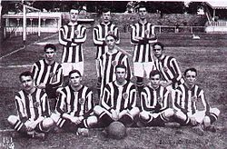
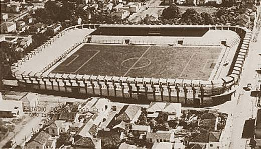

Botafogo
O Botafogo de Futebol e Regatas, fundado em 1904, é um dos clubes mais tradicionais do futebol brasileiro,
com uma rica história de conquistas e ídolos que marcaram época. Localizado no Rio de Janeiro, o Botafogo
é conhecido por sua paixão e dedicação ao esporte, além de sua torcida fervorosa que sempre apoia o time em
todos os momentos. Ao longo dos anos, o clube acumulou uma série de títulos importantes, incluindo
campeonatos
estaduais, nacionais e internacionais. Entre suas conquistas mais notáveis estão os títulos do Campeonato
Brasileiro, da Copa do Brasil e da Taça Libertadores da América. O Botafogo também é reconhecido por revelar
grandes talentos do futebol, como Garrincha, Nilton Santos e Jairzinho, que se tornaram lendas do esporte e
contribuíram para a fama do clube.


O Botafogo de Futebol e Regatas é um dos clubes mais tradicionais e vitoriosos do futebol brasileiro, com
uma rica história de
conquistas tanto em competições nacionais quanto internacionais. Fundado em 1904, o clube acumula uma série
de títulos que refletem sua tradição e sucesso ao longo dos anos. No cenário nacional, o Botafogo conquistou
o Campeonato Brasileiro por duas vezes (1968 e 1995) e a Copa do Brasil em 1993. O clube também possui
diversos títulos estaduais, com mais de 20 Campeonatos Cariocas em seu currículo. Internacionalmente, o
Botafogo se destacou ao vencer a Taça Libertadores da América em 1963, além de conquistar a Copa Conmebol em
1993. Essas conquistas consolidam o Botafogo como uma força significativa no futebol sul-americano. Ao longo
dos anos, o clube revelou grandes talentos e contou com jogadores icônicos que contribuíram para seu
sucesso. A torcida apaixonada do Botafogo também é um fator importante na história do clube, sempre apoiando
a equipe em busca de novas glórias.

O Estádio Nilton Santos, também conhecido como Engenhão, é a casa do Botafogo de Futebol e Regatas.
Inaugurado em 2007, o estádio possui uma capacidade para mais de 46 mil espectadores e é considerado um dos
mais modernos do Brasil. O Engenhão é palco de grandes jogos do Botafogo, além de eventos esportivos e
culturais. A torcida alvinegra faz do estádio um verdadeiro caldeirão, apoiando o time em busca de vitórias
e conquistas.
O mascote do Botafogo é o Manequinho, uma figura carismática que representa a paixão e a alegria da torcida
alvinegra. Inspirado na famosa estátua do menino fazendo xixi, o Manequinho é uma presença constante nos
jogos e eventos do clube, animando a torcida e simbolizando o espírito brincalhão e irreverente do Botafogo.
Com seu jeito único, o mascote conquista fãs de todas as idades e se torna um símbolo querido do clube.